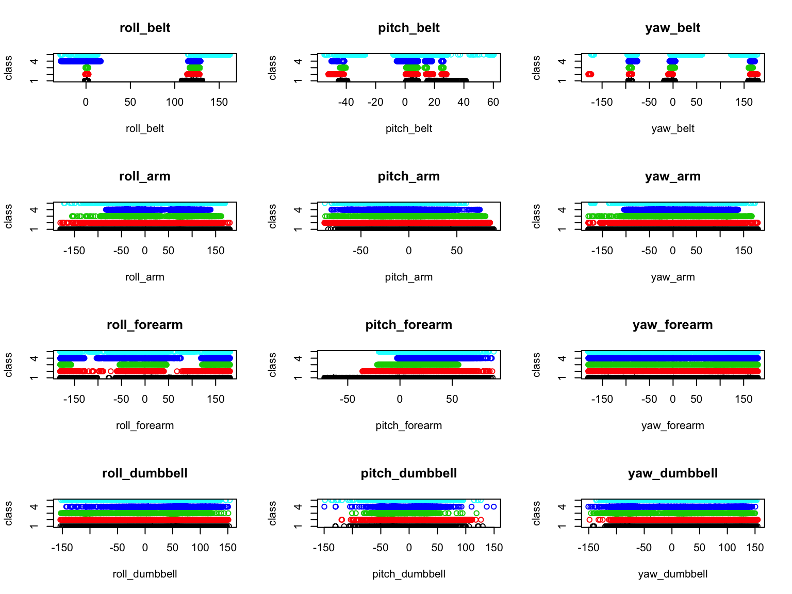
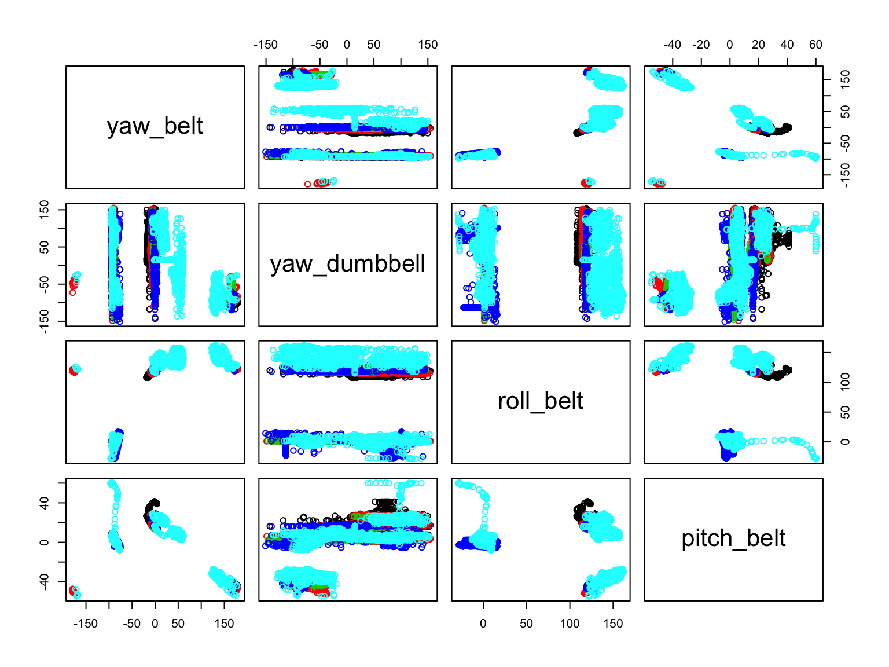

Using data recorded on participants performing Bicep Curls, the data for roll, pitch, and yaw of the belt, arm, forearm, and dumbbell are used to predict the type of curl performed. This appears to perform well with a > 97% accuracy of predictions on a 25% cross validation set.
Six participants were asked to perform Unilateral Dumbbell Bicep Curls. Each were asked to perform a set of 10 repetitions in one of five ways, recorded as Classes (“classe” column). The classes are A) according to specifications, B) throwing elbows forward, C) lifting halfway, D) lowering halfway, and E) throwing hips forward. Only class A is considered good form, others are considered common mistakes. There are a number of data collected in the performance of these tests.
While there are many columns of data, we will focus on roll, pitch, and yaw measurements made on the belt, arm, forearm, and dumbbell. In particular, we will use measured values, not the grouped values (e.g. average, min, max of each window) to allow prediction of the test set.
To build the model, the training set will be split to 75% are taken to train the model and 25% used for cross validation. This allows us to modify the model if necessary without using the test set.
suppressMessages(suppressWarnings(library(ggplot2)))
suppressMessages(suppressWarnings(library(caret)))
data_columns = c("roll_belt",
"pitch_belt",
"yaw_belt",
"roll_arm",
"pitch_arm",
"yaw_arm",
"roll_forearm",
"pitch_forearm",
"yaw_forearm",
"roll_dumbbell",
"pitch_dumbbell",
"yaw_dumbbell",
"classe"
)
data_curl <- read.csv("pml-training.csv", na.strings=c('#DIV/0!', '', 'NA'))
#trainingset <- averaged_windows[,c(grep("avg", names(averaged_windows)),160)]
measurements <- data_curl[data_columns]
intrain <- createDataPartition(y=data_curl$classe, p=0.75, list=FALSE)
training <- measurements[intrain,]
cross <- measurements[-intrain,]
names(training)## [1] "roll_belt" "pitch_belt" "yaw_belt" "roll_arm"
## [5] "pitch_arm" "yaw_arm" "roll_forearm" "pitch_forearm"
## [9] "yaw_forearm" "roll_dumbbell" "pitch_dumbbell" "yaw_dumbbell"
## [13] "classe"testset <- read.csv("pml-testing.csv", na.strings=c('#DIV/0!', '', 'NA'))Plot the different features against the classes
par(mfrow = c(4,3)) # Each device is a row
for (i in 1:12) {
plot(x = training[,i],
y = training$classe,
col=training$classe,
xlab=names(training)[i],
ylab="class",
ylim=c(1,5),
main=names(training)[i],
)
}
While it is not obvious which measurements will predict good form, there are distinct featuresm, like forearm pitch, that appear to trend with category.
We perform a quick check to look for correlated data.
M<- abs(cor(training[,-13]))
diag(M) <- 0
which(M>0.7, arr.ind=T)## row col
## yaw_belt 3 1
## roll_belt 1 3#print(M)
plot(training[c("yaw_belt","yaw_dumbbell", "roll_belt", "pitch_belt")], col=training$classe) It apprears that there is a correlation between the yaw and roll of the belt. To a slightly lesser extent, the pitch of the belt is correlated. The surprising correlation is between the pitch of the belt and the yaw of the dumbbell, but from the plots, the correlation may just be a function of more or less movement.
modelFit <- train(classe ~ ., data= training, method="rf")
modelFit ## Random Forest
##
## 14718 samples
## 12 predictor
## 5 classes: 'A', 'B', 'C', 'D', 'E'
##
## No pre-processing
## Resampling: Bootstrapped (25 reps)
## Summary of sample sizes: 14718, 14718, 14718, 14718, 14718, 14718, ...
## Resampling results across tuning parameters:
##
## mtry Accuracy Kappa
## 2 0.9819080 0.9771137
## 7 0.9826029 0.9779954
## 12 0.9765288 0.9703155
##
## Accuracy was used to select the optimal model using the largest value.
## The final value used for the model was mtry = 7.#getTree(modFit$finalModel, k=2)
pred_cross <- predict(modelFit, cross)
table(pred_cross, cross$classe)##
## pred_cross A B C D E
## A 1391 8 0 0 0
## B 3 932 5 0 1
## C 0 9 843 1 4
## D 1 0 6 803 6
## E 0 0 1 0 890# Determine percentage predicted correctly
for (i in 1:5){
print(table(pred_cross, cross$classe)[i,i]/sum(table(pred_cross, cross$classe)[,i]))
}## [1] 0.9971326
## [1] 0.9820864
## [1] 0.9859649
## [1] 0.9987562
## [1] 0.9877913There is, for me, rather surprising accuracy in the predictions of each category. Finally, we apply it to the test set and obtain the following results:
pred_test <- predict(modelFit, testset)
pred_test## [1] B A B A A E D B A A B C B A E E A B B B
## Levels: A B C D EWith just using measurements of roll, pitch, and yaw of the belt, arm, forearm, and dumbbell, we can achieve a > 97% accuracy based on cross validation using a Random Forest model.